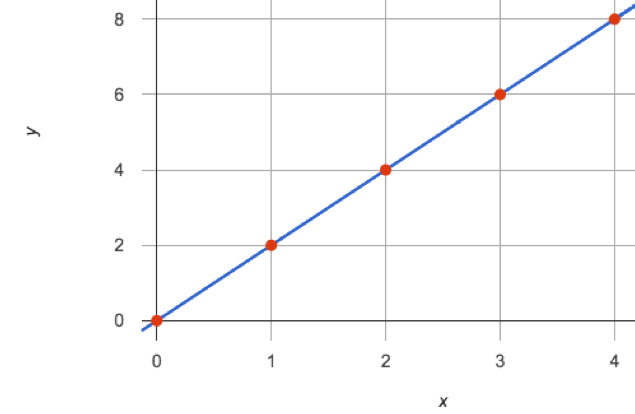
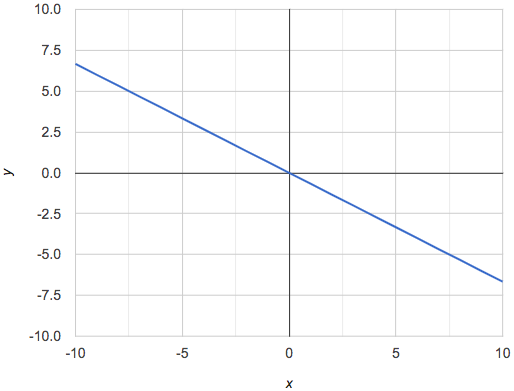
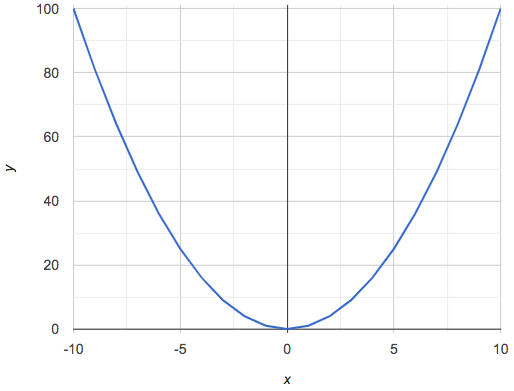
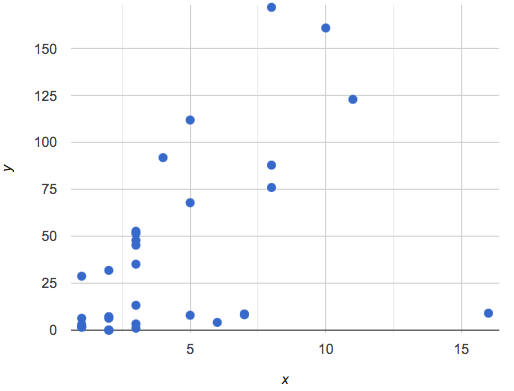
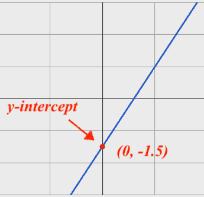
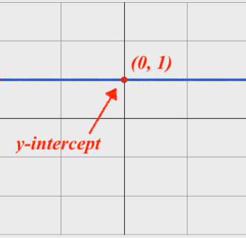
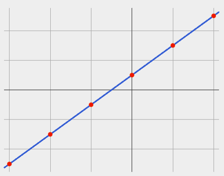
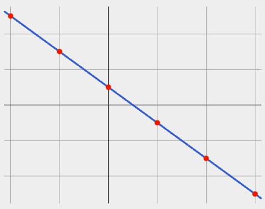
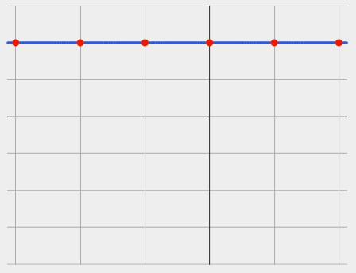
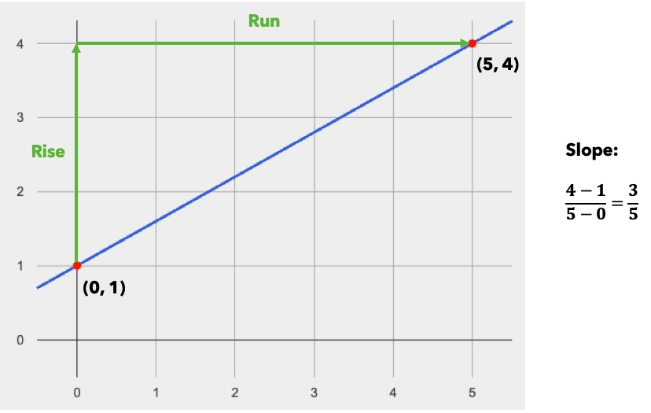

Functions Can Be Linear
(Also available in WeScheme)
Students explore the concept of slope and y-intercept in linear relationships, using function definitions as a third representation (alongside tables and graphs).
|
Lesson Goals |
Students will be able to…
|
|
Student-facing Lesson Goals |
|
|
Materials |
|
|
Key Points for the Facilitator |
|
axis-
A reference line, used to determine the position of a coordinate
data row-
a structured piece of data in a dataset that typically reports all the information gathered about a given individual
graph-
a diagram (such as a series of one or more points, lines, line segments, curves, or areas) that represents the variation of a variable in comparison with that of another variable.
line-
an infinite collection of points forming a straight one-dimensional figure having no thickness and extending infinitely in both directions
linear relationship-
sequences that change at a constant rate, or points forming a straight line on a graph
scale-
resize an image to be larger or smaller while maintaining ratios and proportions
slope-
the steepness of a straight line on a graph
table-
a data structure that stores data as rows, with entries in particular columns
y-intercept-
the point where a line or curve crosses the y-axis of a graph
| Simple Sequences and Straight Lines | 15 minutes |
Overview
Students explore the concept of linearity, as represented in tables and graphs.
Launch
Complete Part 1 of Notice and Wonder (Linearity) and notice and wonder about this table and graph.
|
 |
-
What do you Notice?
-
Although answers will vary, important observations include: _each (x,y) pair on the table corresponds to a point on the graph; both the x and y values in the table are increasing by consistent intervals; and, the points on the graph are connected by a straight line.
-
-
What do you Wonder?
-
Complete Part 2 of Notice and Wonder (Linearity) and consider the questions about these two data tables.
|
|
-
What would the next (x,y) pairs be for these tables?
-
What would the y-values be when x is 0?
We can think of the "x" column as counting the order in which the y-values appear (1st value, 2nd value, etc). When we notice that x-values change at a constant rate and the y-values also change at a constant rate, we know that if we were to plot those values on a graph, all of the points would fall on a straight line.
Linear Relationships are sequences that change at a constant rate, or points forming a straight line on a graph.
The line representing the linear relationship would not only include the points represented in the table, but also all of the coordinate pairs that satisfy the same rule, including lots of points whose x and y values are fractions and decimals.
Investigate
-
Let’s get some practice connecting tables and graphs on Matching Tables to Graphs.
-
Another option for additional practice is Matching Tables to Graphs (Desmos).
Axes on a graph need an order. Rows in a table don’t!
The points in a table are discrete. While ordering the rows in a table can make it easier for us to find the function, they preserve their meaning if the rows are shuffled into a different order.
On a graph, the points on the x-axis cannot be shuffled, because the x-axis must always be ordered. We can stretch the scale of the axes to making the lines look different, but the points will always be in the same order.
For a challenge - matching tables and graphs with shuffled rows - complete Matching Tables to Graphs (Challenge).
Pedagogy Note To encourage students to look at the points in the table and on the graph, it can be useful to change the scale of the graphs to prevent students from leaning on visual cues like "steepness" to bypass the learning objective. It can also be useful to list the points in the table out of order, both to focus students' attention on the points and to drive home that rows do not have to be ordered! |
Synthesize
We’ve seen that linear relationships can be represented as tables and graphs. Tables only show us some points on a line, whereas a line itself is made up of an infinite number of points. While a table represents a sample of some larger trend, the graph is a way of seeing the trend itself.
| Linear, Non-Linear, or Bust! | 15 minutes |
Overview
Students deepen their understanding of linearity, by seeing counterexamples (non-linear relationships), as well as tables and graphs for which there is no relationship.
Launch
Have students turn to Are All Graphs Linear?, where they’ll Notice and Wonder about the six graphs below and consider the question, If all linear relationships can be shown as points on a graph, does that mean all graphs are linear?
  |


{kind=link}
{kind=link}
{kind=link}
{kind=link}
{kind=link}
{kind=link}
{kind=link}
-
What do you Notice?
-
What do you Wonder?
Linear relationships in a graph always appear as straight lines
Three of the graphs above represent linear relationships, and three show other, non-linear relationships. As we can see, the linear graphs can go in lots of directions and non-linear relationships can follow patterns that aren’t linear!
Have students turn to Are All Tables Linear?, where they’ll Notice and Wonder about the six tables below and consider the question, If all linear relationships can be shown as tables, does that mean all tables are linear?
|
|
||||||||||||||||||||||||
|
|
||||||||||||||||||||||||
|
|
-
What do you Notice?
-
What do you Wonder?
-
Can you figure out what the next (x,y) pair should be for each of them?
-
Can you guess what the y-value for each table would be when x is 0?
Linear relationships in a table show up as sequences that change at a constant rate.
Three of the tables above show linear relationships, and three show other, non-linear relationships. As we can see, the linear tables can have y-values that change by zero (no change), by a positive number (constant increase), or a negative number (constant decrease) as the x-values increase. The other tables may show patterns, but they aren’t linear!
Sometimes there is no function that will give us a particular table or graph! Take a look at the table and graph below. Can you predict the next two rows? Where will the next point be?
|
 |
{kind=link}
Investigate
-
Can you tell when a relationship is a linear function? A non-linear one? Not a function at all?
-
Can someone remind us how to tell whether or not a graph represents a function? It has to pass the vertical line test!
Have students complete Linear, Non-linear, or Bust?. For more (optional) practice, you can have them work with Graphs: Linear, Non-linear, or Bust? and Graphs 2: Linear, Non-linear, or Bust?.
Synthesize
Data has a "shape", and this shape can emerge when we look for patterns in that data. A linear function is one kind of pattern, and we can see it when viewing data as a table or a graph.
| Slope and y-Intercept from Tables | 20 minutes |
Overview
Students refine their understanding of linearity, identifying properties like slope and y-intercept in tables.
Launch
All linear relationships are defined by slope and y-intercept.
Every linear relationship has two properties:
1) The sequence of y-values always changes at a constant rate - called slope - increasing or decreasing by the same amount for each change in the x-value.
2) The y-value when x = 0 is called the y-intercept.
Have students turn to Slope & y-Intercept from Tables (Intro) and facilitate a discussion.
Consider the first table on the page:
x |
-1 |
0 |
1 |
2 |
3 |
4 |
y |
-1 |
1 |
3 |
5 |
7 |
9 |
-
Compute how much y increases as x increases by 1. We call this the slope.
-
We can see that the y-values increase by 2 each time x increases by 1, giving us a slope of 2.
-
Some students may need an explicit demonstration of subtracting two adjacent y-values in order to recognize that they are changing by 2.
-
-
Identify the y-intercept by finding the y-value when x = 0.
-
The y-intercept is 1.
-
-
What strategies did you use to compute the slope and y-intercept?
-
Leave some time for group discussion of strategies!
-
-
Complete Slope & y-Intercept from Tables (Basic Practice) for more practice with this before we move on to more complicated tables.
Life isn’t always so simple!
-
What if the table didn’t include x = 0?
-
What if the x-values didn’t increase by 1?
-
What if the x-values were out of order?
-
What if we only had two random coordinate pairs?
Consider the second table on the page:
x |
2 |
5 |
8 |
11 |
y |
3 |
9 |
15 |
21 |
-
Try extending the table and filling in the missing points to find the slope and y-intercept.
-
What strategies did you use to extend the table?
How do we find the slope and y-intercept for these functions, without having to sort or extend the table?
We can exploit the fact that all linear functions form straight lines, and a straight line can be defined with only two points! That means it is always possible to compute slope and y-intercept, as long as we have two coordinate pairs!
You can find the y-intercept by expanding the table and following the pattern to figure out the value of y when x = 0, but sometimes that’s a lot of work! How might we compute the slope and y-intercept, using only points from the table?
Leave some time for group discussion…
TO FIND THE SLOPE: Find any two pairs of values in the table, and divide the difference in y’s by the difference in x’s.
This is an easy way to see the change in y as a proportion of the change in x, which gives you the slope of the function.
This is often described as ChangeInY/ChangeInX or rise/run.
x |
3 |
20 |
5 |
9 |
1 |
y |
5 |
56 |
11 |
23 |
-1 |
Taking the first two pairs of values in the the last table on the page, this gives us ( 56 - 5 )/( 20 - 3 ). We can simplify that to 51/17, for a slope of 3.
We would get the same answer if we subtracted the coordinates in the opposite order… ( 5 - 56 )/( 3 - 20 ) = -51/-17 = 3.
Order matters!
We can use the two points in any order we wish, but we need to use the same order for our x’s and y’s. If we mixed up the order for this example, we’d get ( 56 - 5 )/( 3 - 20 ) = 51/-17 = -3.
-
Pick two other pairs of values from the third table and compute the slope. Did you get the same answer?
-
Are there other strategies we could have used to find the slope?
We’ll talk more about how to find the y-intercept in the Defining Linear Functions lesson.
Investigate
Let’s get some practice identifying the slope of a linear function in a table by completing Identifying Slope in Tables
Synthesize
Slope and y-intercept form the essence of linear functions. If we can find them in a sample of data, we can make predictions that go outside that sample. For example: If we know a car is moving at a consistent speed, all we need to know is where it is located at two points in time in order to figure out the speed, and to predict where it will be at any other point in time!
| Slope and y-Intercept from Graphs | 15 minutes |
Overview
Students refine their understanding of linearity, identifying properties like slope and y-intercept from graphs.
Launch
On a graph, the y-intercept is the value where the line "intercepts" the y-axis.
 |
 |
{kind=link}
{kind=link}
On a graph, the slope refers to both the "steepness" and "direction" of the line.
If it goes up as we go from left to right, the slope is positive. |
If it goes down as we go from left to right, the slope is negative. |
If it stays perfectly horizontal, the slope is zero. |
 |
 |
 |
{kind=link}
{kind=link}
{kind=link}
We can compute the slope from a graph the same way we would with a table, by picking two points we know the exact coordinates of.

{kind=link}
Investigate
Let’s get some practice identifying the slope and y-intercept of a linear function in a graph by completing Identifying Slope and y-intercept in Graphs
Pedagogy Note Some texts refer to "four ways to draw straight lines on a graph": sloping up and to the right, down and to the left, horizontal, or vertical. When thinking only in terms of straight lines on a graph, this is technically correct! However, just because we can draw those lines doesn’t make them functions, and it doesn’t mean they all have a defined slope! Once students are comfortable computing slope, try having them compute the slope of a vertical line. They will quickly realize that this results in a zero in the denominator, which makes the slope undefined! This can be a good review of divide-by-zero and another lens for thinking about the vertical line test. |
Synthesize
We have learned how to find slope and y-intercept from tables and graphs of linear relationships. Check in with yourself and what we’ve learned today.
-
Which representation do you feel more confident finding the slope from? Why?
-
Which representation do you feel more confident finding the y-intercept from? Why? Looking ahead, we will be learning about yet another representation of Linear Functions that you might find to be even more flexible and powerful.
Linear relationships are everywhere:
-
"As the number of people visiting the amusement park goes up, the time we spend waiting in line tends to go up."
-
"The more we drive, the more gas we tend to use."
-
"The more Carlo babysits, the more money he tends to earn."
-
"As the number of lizards in the house goes up, the number of cockroaches in the house tends to go down."
What other linear relationships can you think of?
These materials were developed partly through support of the National Science Foundation,
(awards 1042210, 1535276, 1648684, and 1738598).  Bootstrap by the Bootstrap Community is licensed under a Creative Commons 4.0 Unported License. This license does not grant permission to run training or professional development. Offering training or professional development with materials substantially derived from Bootstrap must be approved in writing by a Bootstrap Director. Permissions beyond the scope of this license, such as to run training, may be available by contacting contact@BootstrapWorld.org.
Bootstrap by the Bootstrap Community is licensed under a Creative Commons 4.0 Unported License. This license does not grant permission to run training or professional development. Offering training or professional development with materials substantially derived from Bootstrap must be approved in writing by a Bootstrap Director. Permissions beyond the scope of this license, such as to run training, may be available by contacting contact@BootstrapWorld.org.